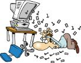
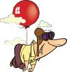
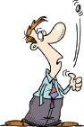
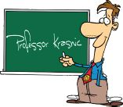
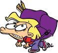
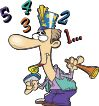

In our information-based society, the ability to handle large amounts of complex information is extremely important. Visual mapping helps represent available information visually in a comprehensive and clear manner. Properly organizing information allows you to easily understand and evaluate existing knowledge and opens the door for effective application of your knowledge.
The following are some of the major benefits of visual mapping.
- Use your brain’s full range of skills: A visual map is a way of representing relations between ideas, images, or words. Because they’re visual as well as verbal, incorporating images as well as words, visual maps play a key role in harnessing the full range of our brain skills in a single, uniquely powerful framework.

- Overcome information overload: Visual maps require much less time to compose than traditional longhand or even word processed notes and also take less time to read. Furthermore, visual maps place emphasis on key concepts and clarify their organization and associations. As a result, you can process a lot more information better and faster.
- One-place repository of information and resources: Not only can you integrate key concepts, but you can also link images, data, charts, and files in any format (Word, Excel, PowerPoint, etc.) so that you have all pertinent information in one place.

- High-level (bird’s eye) and low-level (detailed) view: Visual maps can expand or collapse to give you a focused view or a bird’s eye view. By showing everything — the trees and the forest — in a single view, visual maps help clarify thoughts and tackle complex problems. The accuracy and depth afforded by visual maps are hard to match with any other tool.
- Free-form thinking: Visual maps help you break the habit of thinking linearly and encourage flexibility. This means making use of more visual thinking to link concepts in relationship webs rather than in sequential order. Visual maps are free-style and encourage you to constantly update and refine your thinking and learning.
- Increased creativity: Visual maps’ flexible structure encourages new ways of thinking about concepts and ideas and allows for the uniquely personal organization of information.
- Holistic integration of information and knowledge: Visual representation allows for development of a holistic understanding that words alone cannot convey. Visual maps are a way to develop logical thinking by revealing connections and helping students see how individual ideas form a larger whole. Visual maps are great for integrating vast amounts of information from multiple sources. Visual maps show you where you are in your learning and, just as important, where you are going.
- Clear thinking through connections and organization: Visual mapping allows students to understand the relationships between ideas by creating an image map of the connections. These maps enable students to see the connections between ideas they already have, connect new ideas to existing knowledge, and organize ideas in a logical structure that allows for future modification. This is the basis for meaningful learning.
- Problem solving, decision making, and action taking: Visual mapping can also enhance the problem-solving and decision-making process by generating alternative solutions and options, revealing a previously unseen but appropriate action.

- Improved memory and understanding: Visual maps are very effective at bringing together the logical left brain and the visual and creative right brain to improve memory and productivity. The real power behind visual maps is the ability to link and layer information. By establishing links and layers between concepts, you can see the big picture and gain a deeper understanding of a topic.
- Attractive, interactive, and fun: Visual maps are enjoyable to develop, review, and remember. Because visual maps are attractive and interactive, they maintain interest for much longer than traditional narrative text.
Visual Mapping as a Learning Tool
Many other learning tools can be distracting and confusing. Visual mapping is the ultimate tool to help organize and relate complex information, streamline thought processes, and improve learning in a visual and personalized way.
Visual mapping has become an essential tool for students who want to accelerate and improve their learning and understanding. Given the vast amounts of information they are expected to master, such acceleration and improvement is critical to students’ academic success. Through mapping concepts and ideas, students become better learners and thinkers. Visual mapping offers enough flexibility to maintain interest and encourage curiosity and enough structure to keep the learner on track. When mapping, one is constantly thinking, organizing, connecting, analyzing, simplifying, synthesizing, questioning, and, ultimately, learning.
Visual Mapping as a Learning Assessment Tool
Visual maps can also be used as an assessment tool to check your understanding of a particular subject. Novak’s research showed that visual mapping can help learners detect misunderstandings as well as understandings of the represented information. Visual maps express students’ misconceptions just as clearly as their correct conceptions and can therefore help students and instructors diagnose and remedy these misconceptions.11
My Experience Using Visual Mapping in College Courses
As a teacher, I believe the real key to learning is summarizing new information and tying new information to existing knowledge. If a picture is worth a thousand words, then a visual map, which combines pictures and words, is worth several thousand words.

The visual mapping technique is deeply rooted in learning theory, particularly the insight that new learning needs to fit into existing familiar models. Mapping is a useful strategy for expressing your current understanding of a topic and for noting your developing understanding.
Students’ Experience Using Visual Mapping in College Courses

Once students become familiar with visual mapping, they can use it to prevent the information overload that frequently plagues them. Students praise visual maps as the best tool for note taking and summarizing large amounts of information into a format that helps them study, learn better, and excel on exams. Without the opportunity for taking an active role in the learning process that visual maps provide, students find learning mundane, are uninspired, learn less effectively, and more easily forget what they do learn.

Even in complex courses such as chemistry, students credit visual mapping with enabling them to understand the material and do well on exams. In fact, the students with the highest marks in my classes were typically those who used visual maps.
Other Uses of Visual Mapping
Visual maps’ uses are not limited to learning; professionals and others also use them to enhance their productivity at work and in life. There isn’t any task to which visual mapping can’t add value by offering unique integration and insight.
The uses for visual mapping are nearly infinite, but the following graphic lists (in alphabetical order) some examples of tasks to which visual mapping is often applied.